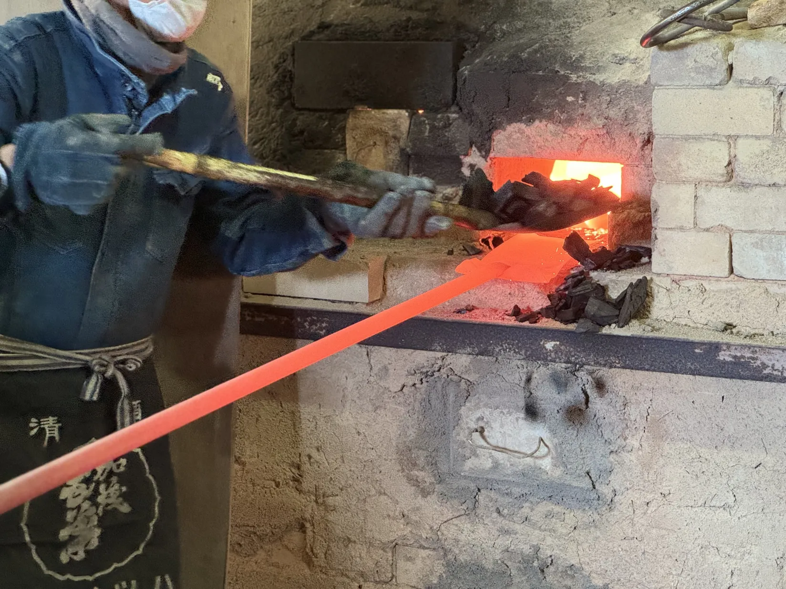
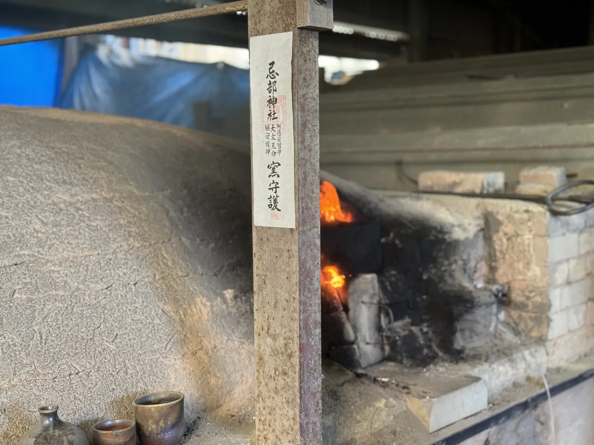
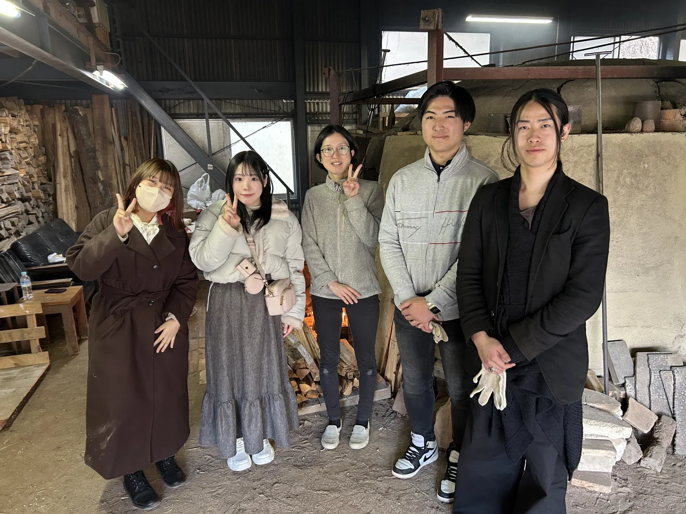
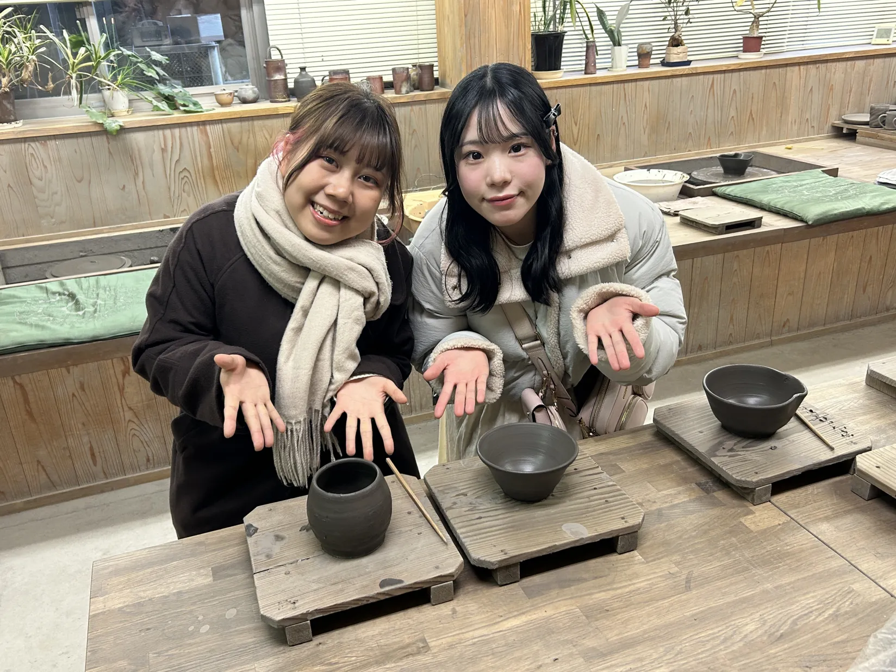
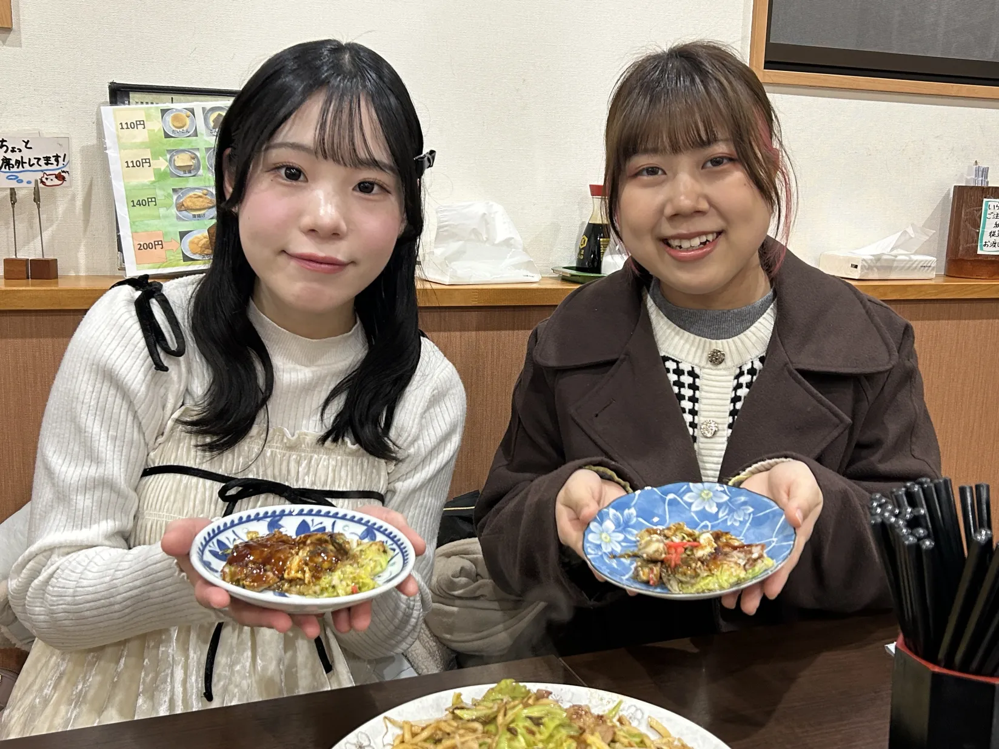
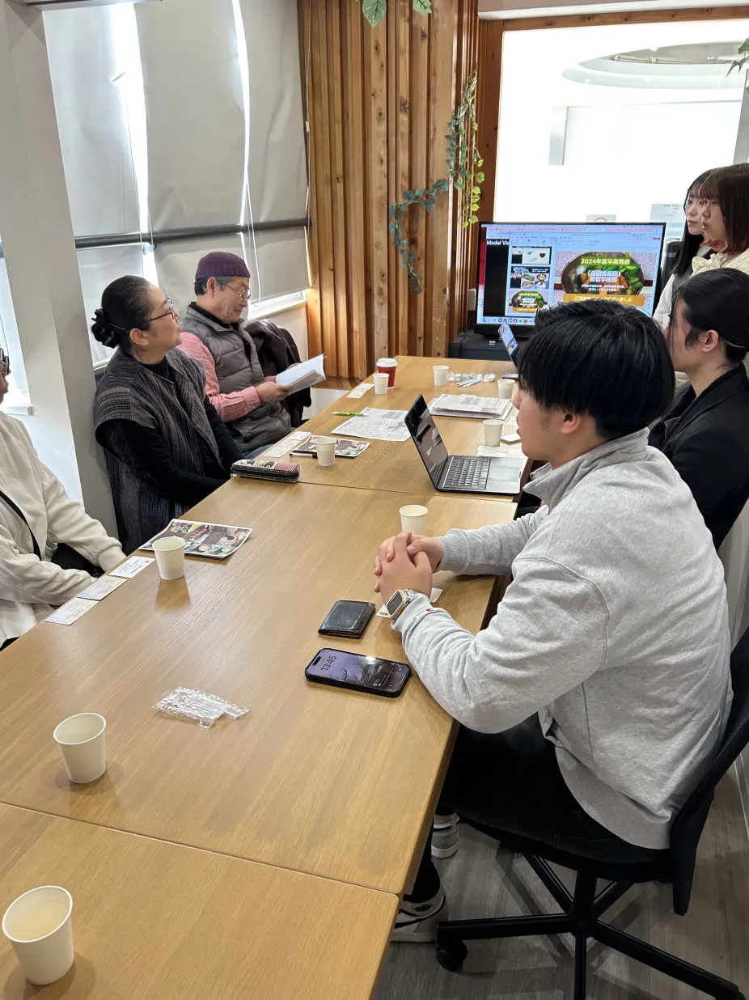
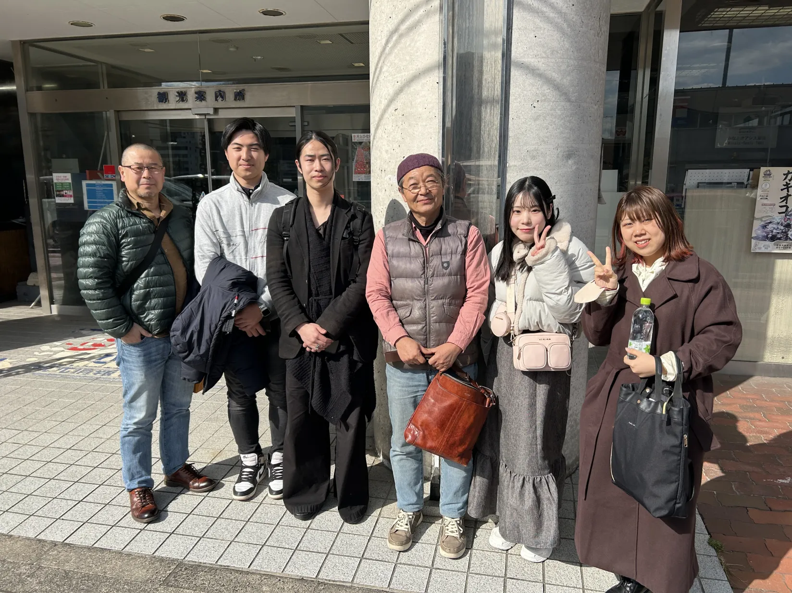
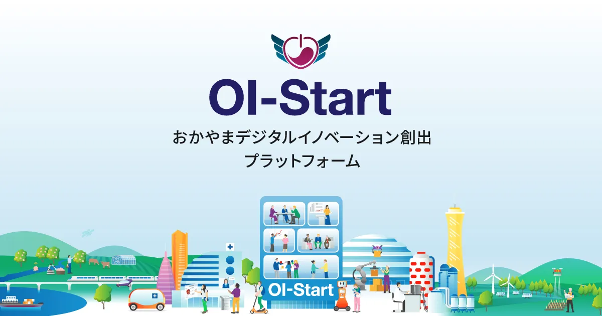

このページは Bizen DAO Discord サーバーの #雑談 チャンネルのアーカイブです（2024/02/13 〜 2025/12/11）
2024年2月13日
2024年5月14日
U
この前の迫力ある釜焼き？はめっちゃ感動しました🔥


N
真っ赤に焼けていて凄いですね❗️
熱さと熱気が写真からも伝わります😍
作陶の様子を見ると、どれだけ手間をかけて作っているか、実感できますよね。
ちなみに、釜は、窯の文字が正しいです😉
2024年5月15日
U
なんと初歩的なみす💦窯と釜を間違えるとは🍲
けどずっと見てれる不思議な空間でした😆
U
はい！職人の技も見入ってしまいました！
私は作品は詳しくないけどこの作る過程はずっと見てられてファンになる方も多いのかなって思いました！
各１/F揺らぎも見ていられますが、炭を落とす工程、手捌き、温度を見る感覚、薪を入れる職人技、全てが魅了されて圧巻でした😄
追伸
おかげでバックパックしていた私は夕暮れ時で宿がなく大阪方面に行きたかったのですが岡山市まで逆走してフランス人のバックパッカーと一緒に泊まらせてもらいました🚶😆
N
そんなに長い時間ずっと見ていらっしゃったんですね！
しかし、フランス人の方とは素敵な出逢いですね！備前焼のおかげで国際交流がとても盛んな地域なので、偶然の出逢いも楽しめますね😉
Bizen DAOにも海外の方がたくさん交流してくれるようになる事を願っています☺️
2024年10月24日
N
@A.J. @Chompoo☆Chihiro @Hiroshi @3Dのiwamura @taki | Mysten
皆さまお久しぶりです！Niyaです。
やっとBizenDAOに学生が入り、色々動きだしました！
ぜひ学生や他メンバーのコメントなどに反応していただいけましたら幸いです🙏
出来れば自己紹介などもintroduce yourselfのチャンネルに書いていただけましたら嬉しいです！
BizenDAOのHPもとりあえず出来上がりましたのでご覧ください^_^
🔗｜official-links
2024年10月26日
F
はじめまして！備前焼作家、藤田祥の妻の藤田恵と申します。
備前焼について皆さんに知ってもらえて嬉しいです＾＾
藤田祥は伝統的な備前焼はもちろん、土の地層が目に見える「地層」シリーズの作品や白い備前焼を作成しており、そちらの原料なんかも面白いので、ぜひいろいろ聞いてください！
よろしくお願いします！
2024年11月1日
K
@niya アナウンスの戸板学祭イベント、dao内でもイベントとして立てたら良いのではないでしょうか？
2024年11月2日
N
ご提案ありがとうございます👍
実は来年からはBizenDAOのイベントとしてコンテストを開催し、学生や一般の方がエントリーするような方式にしようとgoodsunと話していました。Discordのスタンプ機能を使って、memberロールを持っている人なら複数投票出来るシステムを考えています。
ちゃんと準備して運営したいので来年のお楽しみとさせてください🙏😉
今年は学校のイベントとして開催したので、直接来場できる方のみをさせていただきます🙏
N
文化祭そのものをオフイベントとしてアップしておくってことですね。
イベントがどういう形で表示されるのか、Discordに慣れてない方々にも認知していただけるし、良いかもですね😊
やってみまーす👌
私も自分でイベント立てるの初めてなので、嬉しいです🙌
2024年11月7日 — 備前焼盛り付けコンテスト
M
大学で実施した備前焼盛り付けコンテストに参加し、私は「秋の彩りプレート」というタイトルを付けてエントリーしました。
温かみのある色合いの備前焼の上に、秋の食材である紫芋を使ったモンブランをのせた、秋を感じさせる一皿に仕上げました。また、余白を多めに作り備前焼の良さをアピールしました。
3Dも撮影したのでぜひ見てください。リンクはこちらです。
https://bizen.sbs/tokens/.../7
H
大学で実施した備前焼盛り付けコンテストに参加し、私は「お月様プレート」というタイトルを付けてエントリーしました。
この備前焼を見たとき、すぐに月を連想したので、カフェで出されるような月をテーマにしたデザートを作って、その上に乗せました。
3Dも撮影したのでぜひ見てください。リンクはこちらです。
https://bizen.sbs/tokens/.../4
K
大学で実施した備前焼盛り付けコンテストに参加し、私は「和のアフタヌーンティー」というタイトルを付けてエントリーしました。
備前焼の渋い色合いが和菓子の色合いと相性が良く、美しさが出ると思い、4種類の和菓子を選びました。
3Dも撮影したのでぜひ見てください。リンクはこちらです。
https://bizen.sbs/tokens/.../5
H
大学で実施した備前焼盛り付けコンテストに参加し、私は「前菜3種盛り！」というタイトルを付けてエントリーしました。
人気の前菜を集めて欲張りプレートを作りました、長方形のお皿はお魚のイメージがあったので、カラフルなちらし寿司もいれてみました！
3Dも撮影したのでぜひ見てください。リンクはこちらです。
https://bizen.sbs/tokens/.../15
R
大学で実施した備前焼盛り付けコンテストに参加し、私は「おいもずくし」というタイトルを付けてエントリーしました。
備前焼の茶色にさつまいもの紫と黄色が映えそうだと思ったのでさつまいも尽くしのチーズケーキを作り盛り付けました！
3Dも撮影したのでぜひ見てください。リンクはこちらです。
https://bizen.sbs/tokens/.../8
R
大学で実施した備前焼盛り付けコンテストに参加し、私は「みんなのお気に入り集めました！」というタイトルを付けてエントリーしました。
どの年代の人も好きな卵焼きとからあげを1皿にまとめました！！
備前焼に合った料理と好きなもので素敵な1皿にしました。
3Dも撮影したのでぜひ見てください。リンクはこちらです。
https://bizen.sbs/tokens/.../10
M
大学で実施した備前焼盛り付けコンテストに参加し、私は「和伊折衷」というタイトルを付けてエントリーしました。
日本とイタリアの折衷料理 日本の貴重な文化財である備前焼にイタリアの名物料理「アクアパッツァ」を加え、日本とイタリアの融合を表現しました。この商品を通して、備前焼はどんな料理にも合うということが伝われば嬉しいです。
3Dも撮影したのでぜひ見てください。リンクはこちらです。
https://bizen.sbs/tokens/.../20
R
大学で実施した備前焼盛り付けコンテストに参加し、私は「ごろっと秋のパンケーキ」というタイトルを付けてエントリーしました。
パンケーキは家でも簡単に作れることと、誰もが好んでいるスイーツということから、普段使いする備前焼の魅力が引き立つと思い盛り付けました。備前焼の作品名が「サラサラ皿」ということから、こちらの作品名も「ごろごろ」というオノマトペを取り入れたところがポイントです。
3Dも撮影したのでぜひ見てください。リンクはこちらです。
https://bizen.sbs/tokens/.../21
M
大学で実施した備前焼盛り付けコンテストに参加し、私は「秋の味覚3種盛り」というタイトルを付けてエントリーしました。
銀鮭や筍、かぼちゃを使い秋を表現しました。
暗めのお皿なので色が映えるように工夫をし、高さつけた盛り付けにして高級感が出るようにしました。
3Dも撮影したのでぜひ見てください。リンクはこちらです。
https://bizen.sbs/tokens/.../13
O
大学で実施した備前焼盛り付けコンテストに参加し、私は「食卓を彩る和」というタイトルを付けてエントリーしました。
お皿が落ち着いた色のため、様々な食材で彩りを与え、和を最大限に活かしました。家庭の食卓を連想させる一皿です。
3Dも撮影したのでぜひ見てください。リンクはこちらです。
https://bizen.sbs/tokens/.../16
清
大学で実施した備前焼盛り付けコンテストに参加し、私は「海老と蒸し鶏の生春巻き」というタイトルでエントリーしました。
備前焼の和の要素と、生春巻きのエスニックな感じをあえて組み合わせました。丸い模様が特徴的なので目立たせるようにソースで飾りました。
3Dも撮影したので是非見てください！リンクはこちらです。
https://bizen.sbs/tokens/.../18
S
大学で実施した備前焼盛り付けコンテストに参加し、私は「20歳のワインのお供に」というタイトルを付けてエントリーしました。
今回の備前焼を20歳の誕生日プレゼントということなので、お酒も飲めるようになりそのお供にどうぞというテーマにしました。
3Dも撮影したのでぜひ見てください。リンクはこちらです。
https://bizen.sbs/tokens/.../14
Y
大学で実施した備前焼盛り付けコンテストに参加し、私は「秋の真珠」というタイトルを付けてエントリーしました。
備前焼の形をみて貝殻を連想したので、秋にぴったりのスイートポテトを真珠に見立てて盛り付けてみました。
3Dも撮影したのでぜひ見てください。リンクはこちらです。
https://bizen.sbs/tokens/.../19
Y
大学で実施した備前焼盛り付けコンテストに参加し、私は「ハロウインとクリスマス」というタイトルを付けてエントリーしました。
11月なのでハロウインとクリスマスを組み合わせました。かぼちゃでハロウインを、ローストビーフでクリスマスを表現しました
3Dも撮影したのでぜひ見てください。リンクはこちらです。
https://bizen.sbs/tokens/.../25
N
大学で実施した備前焼盛り付けコンテストに参加し、私は「備前焼でローストビーフ丼」というタイトルを付けてエントリーしました。
丸くて深みのある形がどんぶりに合うと考え、備前焼の豪華なイメージにローストビーフ丼が合うと思い、盛り付けました。
3Dも撮影したのでぜひ見てください。リンクはこちらです。
https://bizen.sbs/tokens/.../17
2024年11月8日
3
こんな時間に見てはいけないものをいけないものを見てしまった。
みなさん3Dスキャン上手いですね。
N
お褒めの言葉ありがとうございます❤️iwamuraさんのご指導のおかげです👍本当に助かりました。
先日、大丸松坂屋のメタバース事業をやっている部長さんにも3D精度が高いと褒めていただきました✨
やっぱり新聞紙の効果が絶大だと思います！
2024年11月11日
F
"紫芋"だからこその上品なパープルカラーが、器の柔らかい色味とよく合いますね！普通のモンブランではこうはならなかったはず…主役を選ばれる時のセンスが光っています。
添えられたお芋チップスと紅葉のバランスも、見頃を迎えた秋の野山をイメージさせて、とても素敵です。
コーヒー紅茶はもちろん、洋菓子ですけどお抹茶にも合いそうなプレートですね。
F
可愛い！とっても可愛くて、思わず娘にも見せました。
この皿を磨いている時、「灰がつぶつぶとしっかりかかっていて、備前焼の力強さがあるなぁ」と思っていたので、それが「月に見える」と聞いてハッとしました。
確かにおっしゃる通り、クレーターのある月、そのもの。
新しい視点を教えていただけて嬉しいです。
ウサギさんのドーナツも、星型に抜いたさつまいもも総じて秋らしく、楽しげな物語性を感じました。
これ、3Dで見ると芋の厚みがよく分かっていいですね…写真だけじゃ分からない魅力が伝わりました。
F
さつまいも尽くしのチーズケーキ、手作りなんですか！？こんなに美味しそうなケーキを自らの手で生み出せるスキル、素晴らしいです。
カフェのような出来栄えでありながら、可愛らしさ、手作りのぬくもりも感じられて、長方皿の余白の使い方も美しいなと思いました。
窯の中で灰がかかり、チョコレートのような茶色になっているのをうまく使って、ケーキをばっちり引き立ててくださっていて、嬉しいです。
F
料亭の一皿のような美しさですね…。赤、黄色、オレンジ、緑、秋のイメージの色って、想像以上に鮮やかで、彩り豊かだなぁと改めて感じました。
土味のある備前焼が、多種多様な料理を一つにまとめており、華やかでありながらも落ち着きもある、全体のバランスが素晴らしいです。
こちらも3Dで見て、高さのこだわりをしっかりと見ることができました。
藤田の器を中心にコメントしましたが、どれも本当に素敵で、キラキラしていますね！皆さんの洗練されたセンスに脱帽です。
2024年12月7日
2025年3月10日
N
MVPの学生の備前研修が昨日終了しました。ろくろで作品作り体験、陶芸家さん4名と備前市備前焼振興課の方への活動報告、窯焚き中に薪をくべる体験など、盛り沢山でした！





2025年11月6日 — 備前焼盛り付けコンテスト 2025
2025年11月25日
世
岡山リアルWS☆ 11/25（火）@ 岡山大学 津島キャンパス 共創イノベーションラボ #KIBINOVE 5F開催 ➤ BizenDAO発展に向けたアイデア創出ワークショップ ～ 伝統工芸×web3で未来を創る
https://oistart.okayama-u.ac.jp/news/news_834/
～ 参加してきました！
#魔法のおちゃわん
唯一無二の炎の藝術これ素敵 !! 千年の悠久の歴史を持つ備前焼は、世界に2つと存在しない作品だから、NFTとは好相性。さらに千年先の子孫に、銘品に添えたホルダーの想いが届けられる BizenDAOに脱帽、清き一票です !!
※ 地方創生DAO推し活 Vlog
TikTok あります☆

2025年11月27日
世
【 コミュニティ紹介スペース「ロカネット放送局」】
日時： 2025年11月29日（土）12:00～（お昼の開催です）
◎ スペースurl
X Spaces
世界線にインタビュー☆ と題する嬉しいご縁をいただき、
11/29（土）お昼より、BizenDAOや子ども食堂DAOなどAGIweb3世紀の地方創生をテーマに、kurokoginさんのリードで笑いがとれる放談セッションに臨みます。ご都合よろしければ！
北海道～東京～大阪～岡山へと流浪する生涯ジョブホッパー民（私）の生存戦略あわせて、地方創生DAOの可能性さらにマスアダプションの鍵を発見できれば、嬉しく想います。こぎんさん、お導きよろしくお願いいたします。 Call me Arts !!
【 当日のネタ帳： ご都合よろしければ聴いてね 】
○
BizenDAO
○
11/25開催WS
○
関連 Vlog
○
子ども食堂DAO
○
政策レシピ
2025年11月28日
N
素晴らしい企画ですね！BizenDAOの活動も広めていただき、嬉しいです^_^
残業ながらちょうど移動中の時間でリアルタイム聴講が出来ません。アーカイブなどもしありましたら後日シェアいただけましたら幸いです！😊
2025年11月29日
世
@niya おつかれ様です。先ほど Artsの機材不具合で貴重な機会を流してしまいました。また機会あればということで、アーカイブ共有できず、ごめんなさい～ m( )m
2025年11月30日